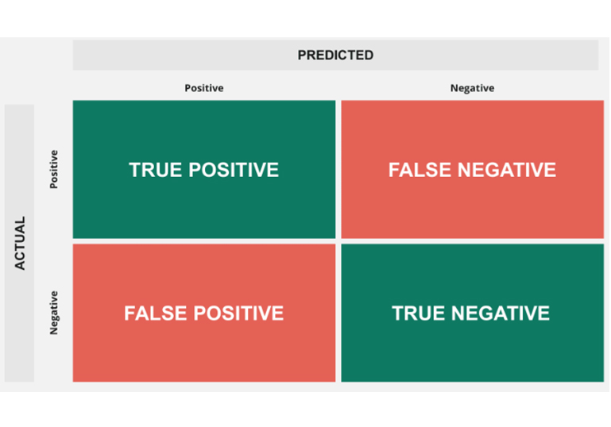
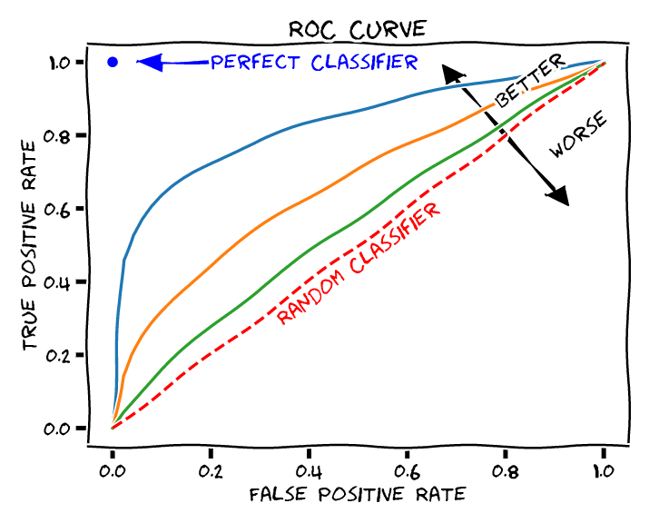

In a Jupyter notebook, a model's goal is to maximize the Area Under the Curve (AUC-ROC). But in the boardroom, the model's goal is to maximize revenue or minimize cost. As Data Scientists, our most critical soft skill is the ability to translate technical metrics into business outcomes.
When presenting to the C-suite, telling them your new model improved the F1-Score by 0.04 will likely be met with blank stares. But telling them the model will save the company $400,000 this quarter will get their immediate approval. Here is how you bridge that gap.
We all know the standard Confusion Matrix (True Positives, False Positives, etc.). To speak to stakeholders, we must assign a dollar value to every single quadrant. Let's look at this through the lens of a Customer Churn Prediction model.

Once we have dollar values for the quadrants, we can calculate the Expected Value (EV) of deploying the model versus doing nothing. This is the only formula stakeholders care about.
Assume our customer LTV is $1,000. Our marketing intervention (a discount code) costs $100. If we do nothing, we lose $1,000 for every churned customer. If we use our model, every False Positive costs us $100 in wasted discounts. But every True Positive saves us $900 ($1,000 LTV - $100 cost). We can now definitively prove if the model's precision is high enough to justify the campaign spend.
By default, most classification models use a 0.5 (50%) probability threshold to decide if something belongs to Class 1 or Class 0. This is almost always the wrong business decision.
The threshold is actually a dial that controls risk appetite. Who gets to turn that dial? The business leaders.

If missing a fraudulent transaction costs the company $10,000 (FN), but reviewing a legitimate transaction only costs $5 in human labor (FP), the business wants to catch everything. We lower the probability threshold from 0.5 to 0.1. We generate more False Positives, but we guarantee high Recall.
If we are sending an expensive physical gift basket to potential VIP clients ($300 cost per FP), we only want to send it if we are absolutely certain they will upgrade their tier. We raise the threshold to 0.9. We will miss some opportunities, but we guarantee high Precision to protect the marketing budget.
Our job is not to build the most "accurate" model. Our job is to build a mathematical lever that the business can pull to optimize for their current financial goals. When you explain your models in terms of Expected Value and Risk Thresholds, you stop being a programmer and become a strategic partner.